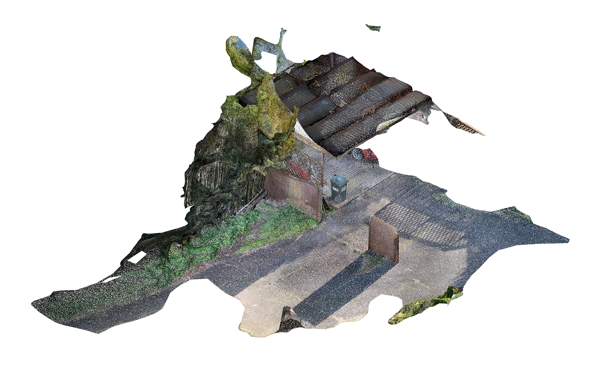

|  |
|
After months of threatening to fall, part of the fence at the front of the property finally
collapsed during a storm in 2022. We partially disassembled the broken section and put it to one side. The gap became an
extra space for cars to drive through and park, freeing up part of the driveway for other uses. The cars driving
through this space exacerbated the already cracked concrete. Plants and flowers began to grow up through the
widening gaps. Opportunity from failure.
A patch of bamboo behind the carport has been growing wild for many years, despite multiple attempts to tame it. Recognising its potential for a future project, we harvested eight tall trees and cut them into 2.5 metre lengths. On discovering the strange beauty of this forgotten spot, we crafted a table from the remaining stumps and leftover timber fencing and ate lunch down amongst the bamboo. In 2028 the timber floor of the carport began to rot and break away. Bamboo began to grow up through the gaps. Remembering the joy of eating amongst the trees, we placed a couple of chairs on the least damaged parts. A friend strung up a hammock. By 2031 the floor had completely rotted away. The addition of a few partially finished walls and a light roof thrown over the trimmed bamboo made an extra summer bedroom. |